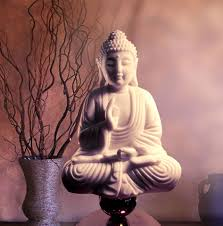

Staying positive can be tough. Positivity can start to wain when you are bombarded with a succession
of negativity, failures, disappointment and heartbreak. Every challenge you face withdraws from your
energy, resilience and a little bit of your faith. Once your positive energy is depleted, pessimism
slowly begins to creep in and take hold. Positive thinking is a mental and emotional state of mind
that focuses on the good and expects positive outcomes. Developing and maintaining positive energy
involves more than merely thinking happy thoughts. It is the anticipation of good (i.e. happiness,
health and success) and it is the belief that all things — situations, obstacles and difficulties
— will work out favorably in the end. Optimism does not involve ignoring negativity. It is the
acknowledgement of the negative but then choosing to focus on the positive. At its root, it is simply
the belief that despite the current circumstances, things will work out favorable in the end.
A positive mind comes from a heart full of faith.
why postivity energy is important ?
Advantages :
being cheerful
being grateful and appreciative
keeping the self and others around us happy
being enthusiastic
being centered
having better awareness
being confident
staying peaceful
developing respectable attitude
Disabvantages :
tendency to complain constantly
indulging in self-blame and blaming others
chronic anxiety
worries
being fearful
getting angry easily
depressing outlook on life in general
habitual procastination
How can you experience the positive energy

By doing mediations
NewslettersInsuranceDiversity, Equity, and Inclusion
Begin by sitting quietly and focusing on your heart.
Imagine yourself drawing in the energies you've given out today. Pull back the energy that has gone into chatting, encounters at work, the distractions of shop windows, or the emotional pull of others.
Don't worry if you don't feel you're fully able to do this. Above all, don't worry that this will cut you off from the people you love. On the contrary, the practice will let you gather your forces to meet them from a more centered place.
Now imagine a circle of protective energy around you. One way to do this is to visualize a thick ribbon of light emanating from your heart and wrapping itself around your body like a cocoon. See this light ribbon as an energetic shield that lets in energies that belong in your field and keeps out energies that don't.
Now, with your awareness in your heart, begin to focus on the breath as it enters and leaves the body. Imagine a window in your chest wall, and the breath flowing in and out through it. With each inhalation, have the thought "I am that I am." Or you may shorten the mantra to "I am." With the exhalation, sense the I-am in your heart center.
Let this pure thought, the recognition of your pure existence, center you and draw you deeper inside. Think of this practice as an exercise in meeting your invulnerable core. It will give you the strength you need to open to your own vulnerability without being overwhelmed by it.
By the sounds of temple bell
vibrations are very important as they expel the negative energies and invite the positive energy. In Feng Shui it is also used to move any stagnant energy. This can be achieved by any positive sound energy source, it can be as simple as women or girls adorning traditional anklets and bangles and moving in the house or by chanting mantra’s loudly and clearly which creates positivity. But in many households these things are not in daily practice so in such scenario I recommend ringing any simple temple bell throughout the house once in the morning and once in the evening. It helps in inflow of positivity and outflow of negativity hence cleansing your home environment.
it can be achieved by waterfalls sounds and nature sounds